Healthy Living
¿Que esperas para aceptar el Bienestar?
Programa de nutrición y bienestar para comunidades basado en la evidencia
Permite a las personas tomar decisiones saludables sobre alimentos y nutrición
Reporte en tribu en 2 momentos del día.
Compartir lo que comes es saludable para vos
Plan Balanceado monitoreado.
Clases Fit 3 veces por semana Protocolo ayuno intermitente 16/8 2 veces por semana.
Consulte los temas de Healthy Living:
- Hacer lista de compras
- Su bienestar
- Cultivar los hábitos saludables
- Cocina casera inspirada en recetas del mundo
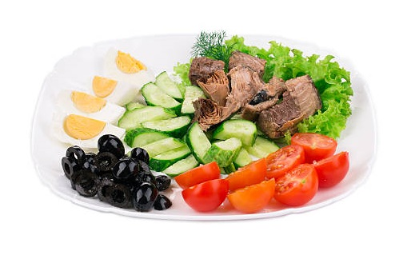
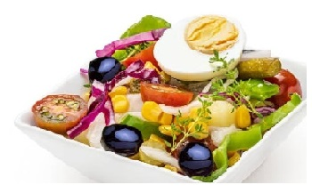
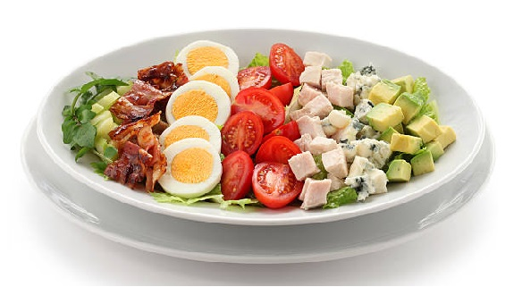
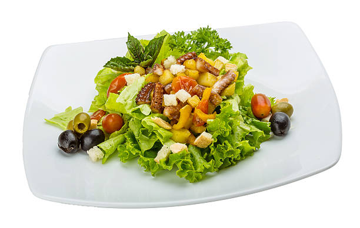
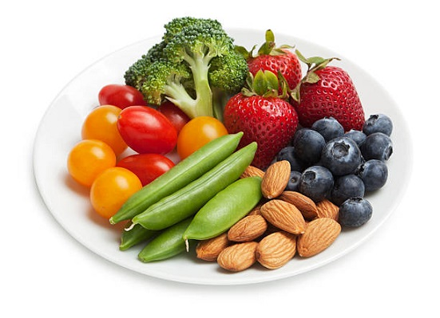
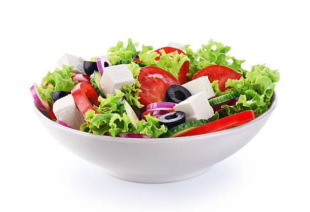
Tips Alimentación saludable
La alimentación saludable comienza con la elección de alimentos saludables. No necesita ser un chef para elaborar comidas nutritivas y saludables para el corazón que su familia adorará. Aprenda en qué debe fijarse en el supermercado, los restaurantes, el lugar de trabajo o en cualquier otra ocasión relacionada con la alimentación.
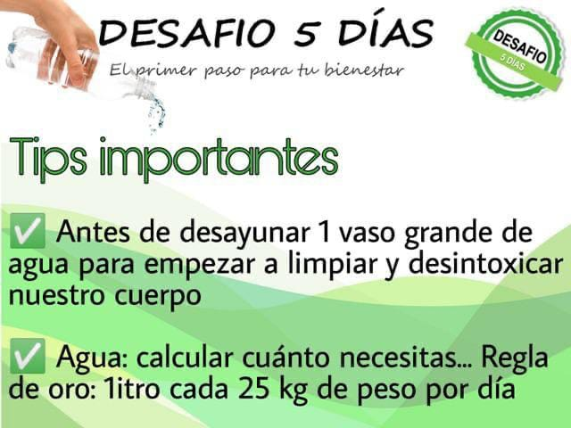
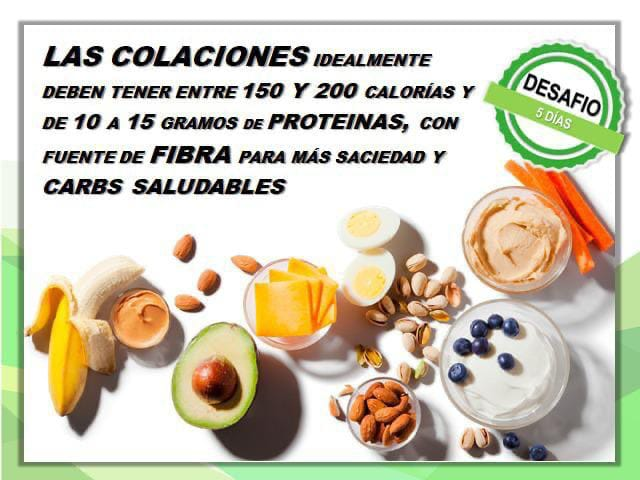
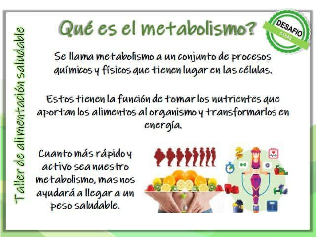
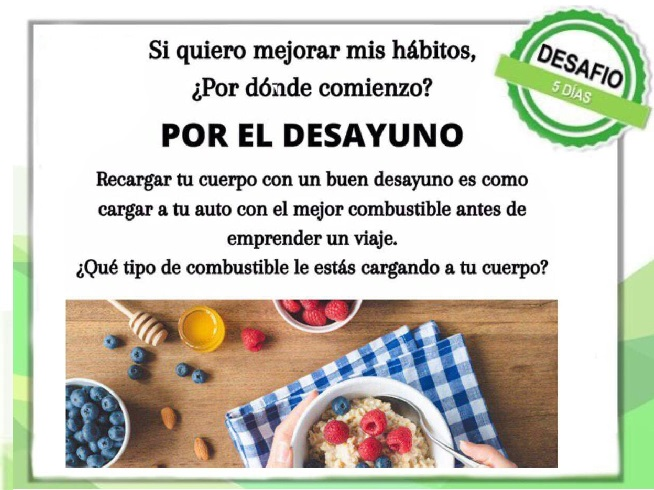
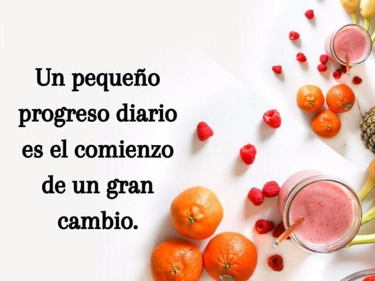